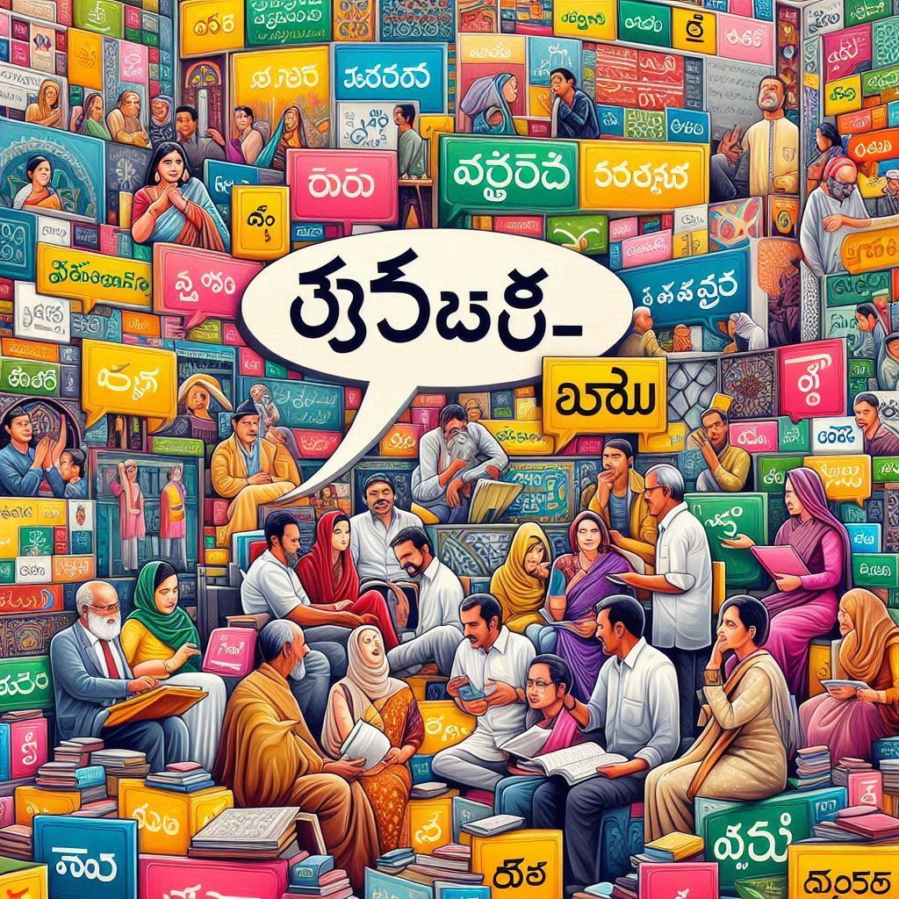
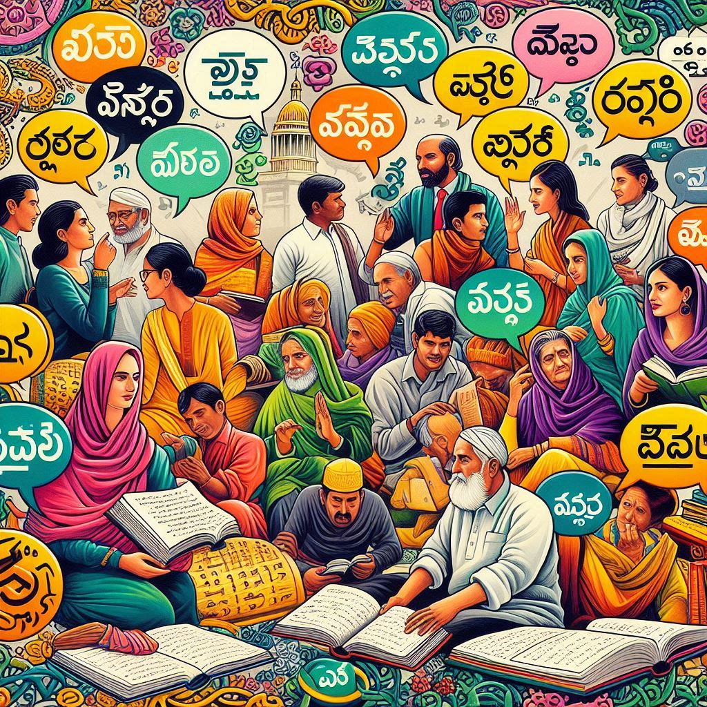

Telangana is home to a rich linguistic heritage, with several languages spoken across the state. Here’s an overview of the primary languages and their significance:
1. Telugu
- Official Language: Telugu is the official language of Telangana and is spoken by the majority of the population. It belongs to the Dravidian language family and is known for its rich literary tradition.
- Dialects: There are various dialects of Telugu spoken in different regions of Telangana, which can vary in vocabulary and pronunciation. The dialect spoken in Hyderabad, often referred to as Hyderabadi Telugu, incorporates influences from Urdu and other languages.
2. Urdu
- Significant Minority Language: Urdu has a substantial presence in Telangana, particularly in urban areas like Hyderabad. The language has historical significance due to the influence of the Nizam’s rule and the cultural intermingling of Telugu and Urdu speakers.
- Cultural Impact: Urdu is prominent in literature, poetry, and music in the region, contributing to the unique cultural landscape of Telangana.


3. Other Regional Languages
- Hindi: Hindi is spoken by some communities, especially in urban areas and among migrant populations.
- Gondi: This is spoken by the Gondi tribal community in certain parts of Telangana, particularly in the northern districts.
- Koya: Koya is another tribal language spoken by the Koya tribe, primarily in the forests of Khammam and Warangal districts.
- Other Tribal Languages: Various other tribal languages are spoken by different indigenous communities in Telangana, reflecting the state’s cultural diversity.
4. Cultural and Literary Significance
- Literature and Poetry: Telugu boasts a long and illustrious literary tradition, with classical poets like Nannaya, Tikkana, and Yerrapragada contributing to its rich heritage. Modern writers continue to enrich Telugu literature.
- Education and Media: Telugu is widely used in education, print media, and electronic media, including television and cinema, making it a vibrant language of communication in the state.
5. Language and Identity
The linguistic identity of the people in Telangana is closely tied to their cultural heritage. Language plays a crucial role in the region’s social and political movements, including the struggle for separate statehood.
Conclusion
Telangana is characterized by its linguistic diversity, with Telugu as the predominant language, complemented by significant Urdu and various tribal languages. This linguistic richness is a vital part of the region's cultural identity and heritage, contributing to its unique character within India.